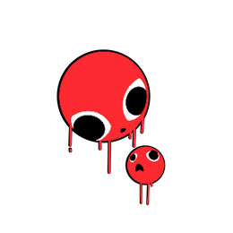
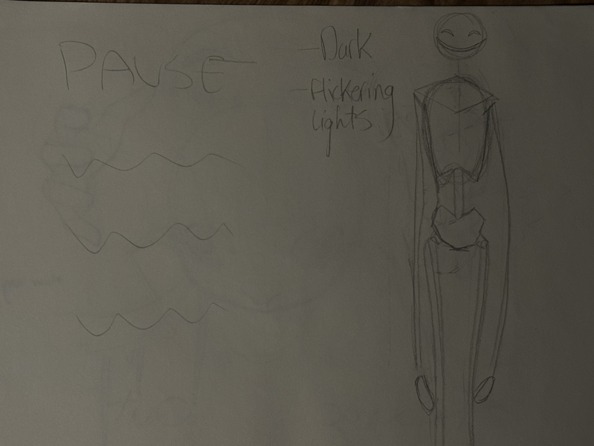
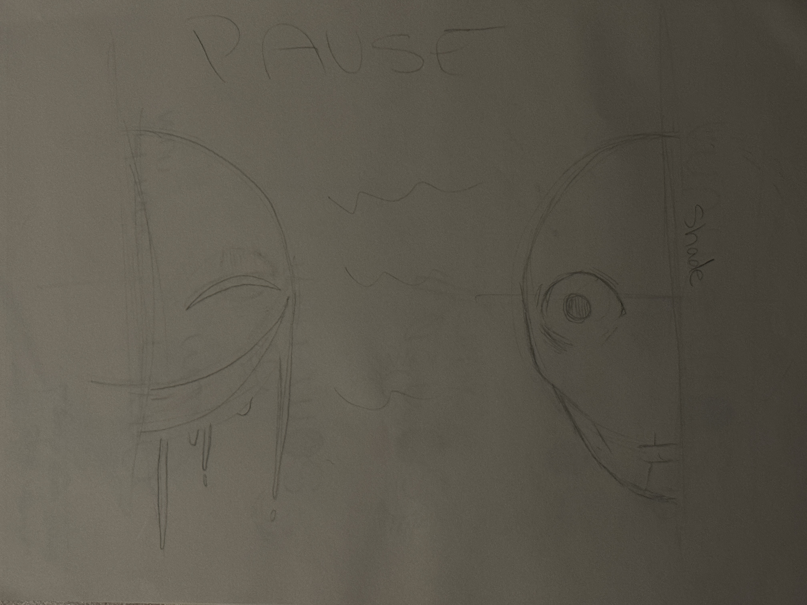
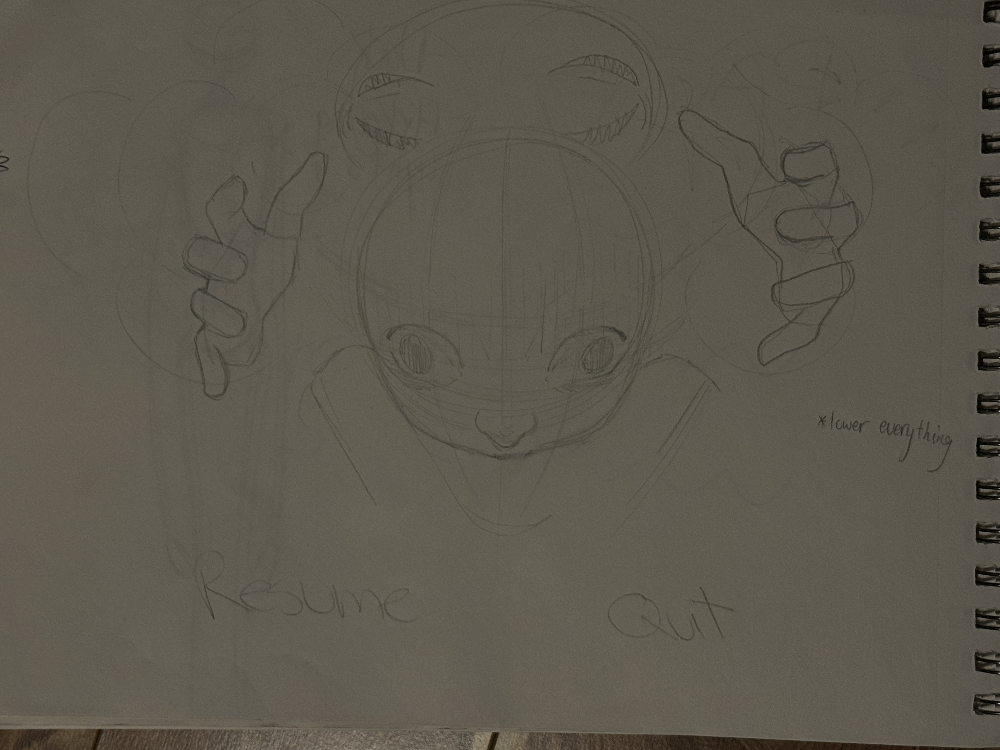

2023
To The World
To the world is an indie project based around the design of Pitch Canker’s tarot cards called “The Troubled Tarot”. During this project I assisted in various illustrative graphics for the game including the pause menu. That carried a feeling of dread and fear from the main character.
Ideation



Sketching
Experimenting different ideas and focal points firstly on paper before beginning digital drafts. Planning layout as to how buttons and other text will be displayed on the page. Making notes to reference in the final design. Finally communicating with the team over the favoured design to implement into the project
Final Concept

Vanessa Sedlezky
Copyright © Vanessa Sedlezky